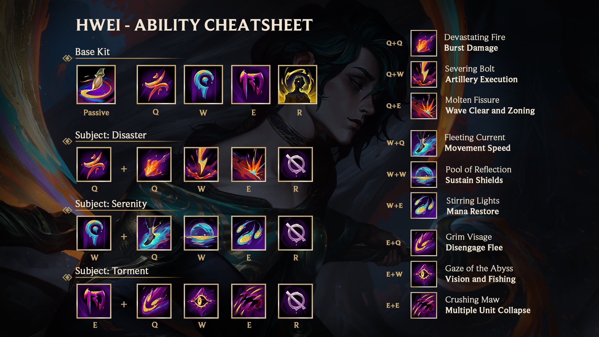

Příběh Hweie / Lore
V severozápadní Ionii byl kdysi nádherný a poklidný ostrov Koyehn. Mezi jeho zlatavými písky, sezónním bazarem a malebným mlynářským městečkem stál koyehnský chrám, prastará a slavná umělecká konzervatoř. Lukai Hwei se narodil, aby tento chrám zdědil. Laskavý a předčasně vyspělý Hwei strávil své dětství tak, že plátnu předával své divoké bdělé sny, které svět kolem něj přetvářely v surrealistické, fantaskní výjevy. Věděl, že se tyto vize liší od skutečnosti, ale díky nim vnímal samotný život jako umění. Hwei byl tak naladěný na odstíny světa, že i jeho oči měnily barvu podle jeho duševního rozpoložení a nálady. Hwei tuto živoucí obrazotvornost vyjadřoval pomocí malířské magie a toto médium ovlivňovalo i emoce jeho publika. Proto vyžadovalo přísnou kontrolu a kázeň, jinak by mohlo pohltit duševní vnímání i tělesné pocity. Pokud ti, kteří toto umění aktuálně provozovali, ho nedokázali či nechtěli ovládat, ohrožovali sami sebe i celé společenství – a byli z Koyehnu vyhnáni. Navzdory těmto zásadám se mladý Hwei své fantazii oddával. Během přehlídky pro chrámové mistry znázornil koyehnské moře. Zatímco však barva proudila kolem plátna, jeho kontrola zeslábla. Zmítaly jím emoce, divoké a bezedné jako oceán, a on se poddal jeho kráse. Jeho vize zčernala a jeho poslední vzpomínka je na užaslé mistry, jak se topí. Hwei se probudil o několik dní později v obklopení svých mistrů – byli naživu, ale rozzuření. Dědice chrámu vyhnat nechtěli, ale důrazně mu připomněli jeho povinnosti. Hwei byl hloubkou své moci zděšen – ale i fascinován – a toužil spatřit víc. A tak během dne dodržoval konvence Koyehnu. Ale v noci sám posouval hranice, byl hnán touhou objevit rozsah své moci. Za čas Hwei díky tomuto výcviku dokázal soustředit intenzitu své představivosti, což mu umožnilo vyvolat paletu, v níž proudila magická barva. V dospělosti se Hwei stal mistrem svého řemesla. A díky vášni a pokoře se připravoval na to, že zdědí, co mu právem patří. Těšil se úctě i přízni svých kolegů. Část jeho mysli však zůstala navždy zahalená soumrakem. A tak to zůstalo, dokud chrám nenavštívil hostující umělec: Khada Jhin. Během zlatavého léta Hwei Jhina doprovázel a prováděl ho po Koyehnu. Často se bavili o tvůrčích perspektivách, a přestože uznávali vzájemné rozdíly, Hwei oceňoval Jhinovu virtuozitu a vážil si společně stráveného času. Ovšem večer předtím, než Jhin odešel, Hweie vyzval. Jhin cítil, že díla, která Hwei ukazoval ostatním, byly nucené zástěrky – a chtěl vidět opravdový výkon. Hwei se to snažil popřít, ale jeho oči ho prozradily. Jeho fantazie, zaplavená roky strávenými tvorbou umění beze smyslu, toužila po katarzi. A tak Hwei maloval. Desítky let výcviku vedly jeho štětec. Noc ožila, vybarvená geniální nekonečností jeho mysli. Zaplavily ho emoce, harmonické a niterné, a Hwei je přivítal. Možnost sdílet tyto zapovězené vize s někým dalším ho nadchla a osvítila schopnosti jeho umění: vazbu, inspiraci a bezmezné tvoření. Jhin byl svědkem toho všeho. Pak se s rozzářenýma očima a nečitelným tónem rozloučil a prohlásil, že nazítří odejde, aby „pozoroval kvetoucí lotosy.“ Když vyšlo slunce, na Hweie a ostatní umělce čekala po probuzení série tragédií. Zaprvé: čtyři historické obrazy byly zničené. Zadruhé: poskládání čtyř mrtvol – mistrů, které Hwei v mládí málem zabil. Zatřetí: zachvácení čtyř nejspodnějších pater chrámu plameny. Mezi plameny si Hwei představoval vzduch, který pulzuje barvami. Všechno, co žilo v jeho nitru, prosáklo na povrch. Bylo to děsivé. Bylo to nádherné. Bylo to... umění. Když si Hwei uvědomil tento temný potenciál – zkázu, ničení a muka –, pocítil stejnou hrůzu a fascinaci jako v mládí. Chrám se brzy rozpadl a Hwei z něj vyšel jako jediný přeživší. Byl vyčerpaný a sužovaný pocitem viny, truchlil. Jeho představivost však přetékala a znovu prožívala každý okamžik té katastrofy. Během dne Hwei a vesničané z mlynářského městečka uspořádali pohřeb. V noci se opět vrátil do popelavě šedé rozvaliny a maloval. Jeho paleta nabrala tvar koyehnského erbu – stejného, jaký nosil na srdci. Jedné takové noci našel Hwei pod sutinami pozůstatky pasti – měla okvětní lístky jako lotosový květ. Když Hweiovi došlo, kdo ten chaos zavinil, zaplavila ho lavina emocí. Strach. Smutek. Zrada... Úžas. V nitru ho pálila otázka: proč? Ale chtěl znát odpověď? Anebo bude bezpečnější, když tuto potřebu potlačí? Mohl zde zůstat se svými lidmi – jako dědic – a pomoct jim vše znovu postavit... nebo... Hwei odešel z ostrova a s sebou si vzal sotva něco víc než svůj štětec a paletu. Svůj lid opustil. Od té doby Hwei zjistil, že odpovědi, které hledá, vyvstávají díky tomu, že ostatním vyjeví celý rozsah svého umění. Stopuje hanebné jedince v těch nejtemnějších koutech Ionie a rozpoutává proti nim výjevy plné utrpení, aby pochopil svou vlastní studnu bolesti. Zároveň však hledá oběti Ionie – ostatní svědky –, aby vytvořil sdílený pocit klidu a rozjímání. Hwei, neúnavný umělec povstalý z popela i laskavý muž z kdysi mírumilovného ostrova, čelí nesourodým odstínům Ionie – a své vlastní předtavivosti. Zatímco se po spirále řítí do stínů, osvětluje cestu a jeho mysl překypuje možnostmi. Který stín jeho vlastního já převládne, to se však teprve uvidí.
← Zpět na přehled šampionůSchopnosti
Text pro Lore získán zde: League of Legends Universe